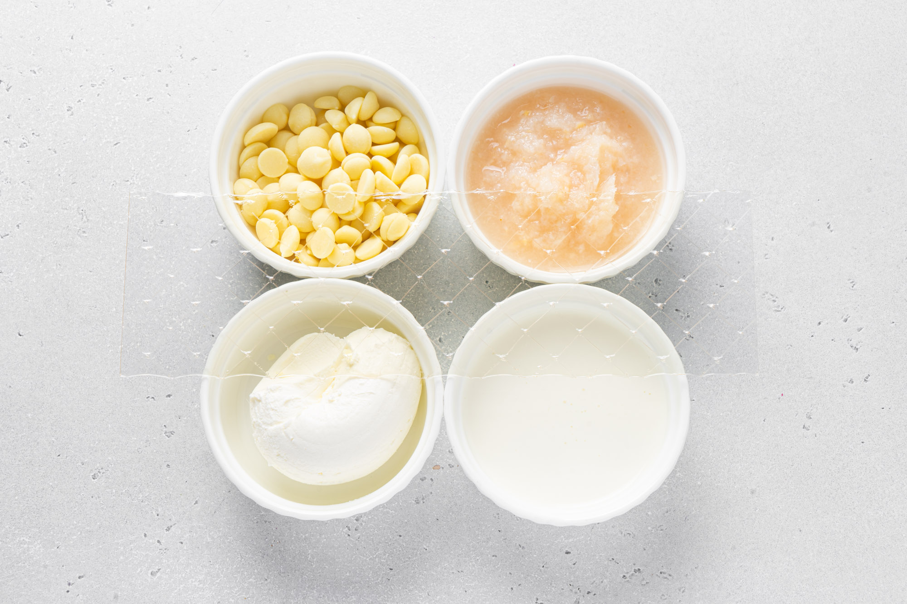
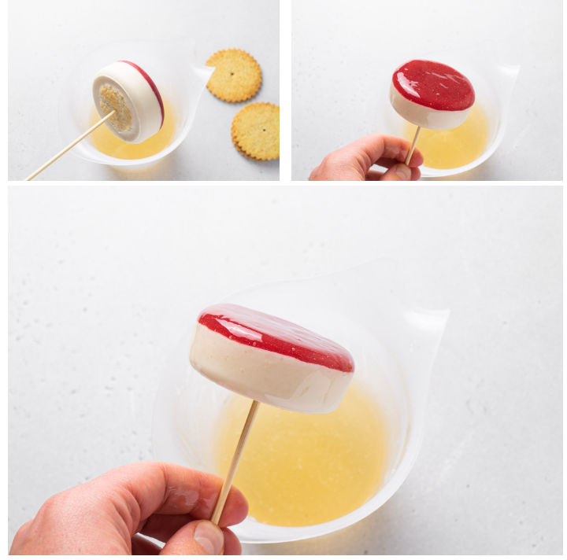

The Famous Masterpiece with Raspberries and Lychee "Ispahan"
I think this is the most spring dessert you can think of. It contains bright raspberries, which, with their sourness, literally awakens the receptors after hibernation and dense chocolate-caramel desserts. A delicate sweetish lychee, the tropics, goes into balance with it, setting us up for the summer mood, which will appear a little later. Shades of rose will remind you of floral freshness, the first flowers of the season and the scent of freshness in the air. All the best is always contained in simplicity and this is beautiful. You want to give such a dessert to the most tender, feminine and refined, the one who will appreciate it, because she herself is the embodiment of lightness and grace.
Let's start with the filling. Please note that we collect everything in one form. Moreover, the filling is on top (at the bottom of the cells), which means that it is not necessary to wait for it to completely freeze. It is enough that the filling grabs and it will already be possible to add mousse.
Soak Ewald gelatin sheet (4 g) in ice water. Use an accurate molecular weight to make sure you have the correct amount of gelatin.
Raspberry puree (160 g) bring to a boil in a saucepan.
Add squeezed gelatin.
Pour in rose water (4 g).
Use the silicone mold of Silikomart Essenziale or Silikomart Unive. A small nuance - hold the board and form in the freezer. This is necessary so that the filling begins to set and does not move when you carry it into the freezer.
We fill 30 grams.
Remove to freezer.
The simplest dacquoise, which will give tenderness to our dessert. In a large measuring cup, beat egg whites (50 g) and sugar (50 g) until soft peaks form.
With a silicone spatula, mix in the almond flour (50 g).
Wrap a 16 cm metal ring with thick foil. Distribute the dough. Bake at 170 degrees until the first blush.
Let me remind you that you can cook mousse already when the filling has become dense. Not necessarily icy.
Soak Ewald gelatin sheet (6 g) in ice water.
Bring lychee puree (110 g) to a boil.
In a large measuring cup, combine white chocolate (60 g) and squeezed gelatin. Pour hot puree over.
Add curd cheese (60 g) and beat the mass with a blender. Cool down to 30 degrees.
In a large measuring cup, beat heavy cream (100 g) to soft peaks.
Combine the masses with a spatula.
Make biscuit blanks with a round cutting.
Fill the cells with mousse and finish with a biscuit. Remove to freezer.
We will use neutral glaze (400 g). I take Valrhona - it is a little more expensive, but the layer will be thinner and less sweet.
Heat it in a large measuring cup to 70-80 degrees. I also prepared sand bases 2 mm thick according to this recipe. Notice the holes in the center.
Pierce the bottom of the cake with a wooden skewer and dip into the frosting. Work fast, it sets instantly.
Decorate with lime zest, raspberry and lychee slices.